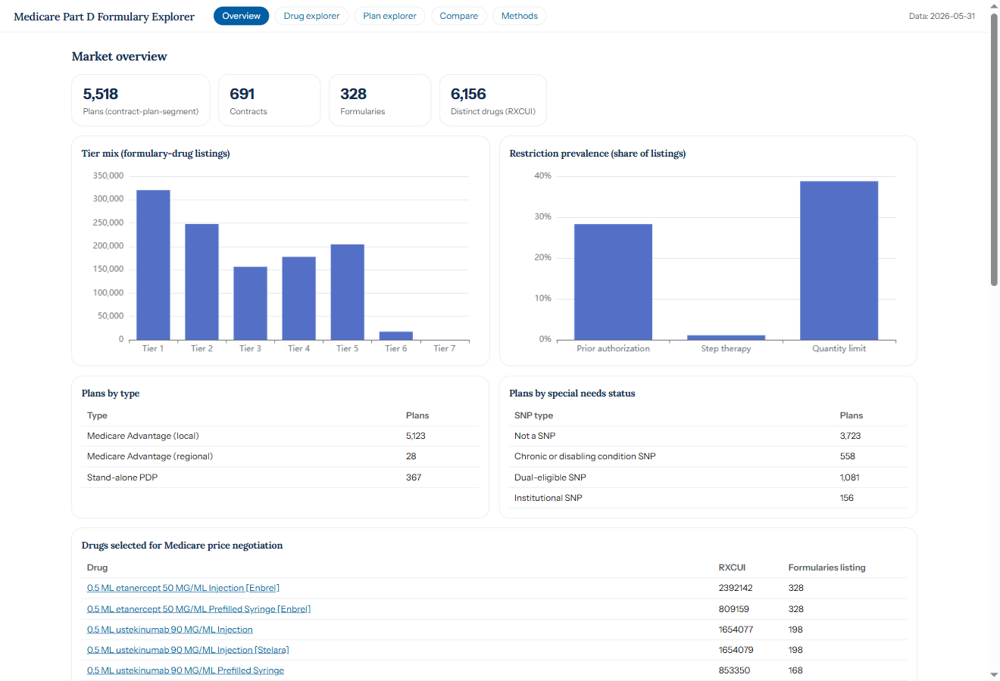
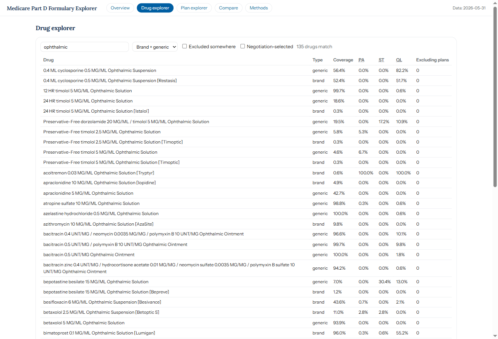
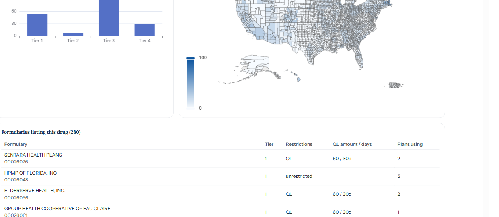
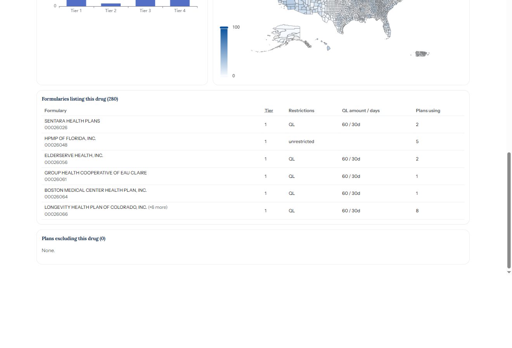
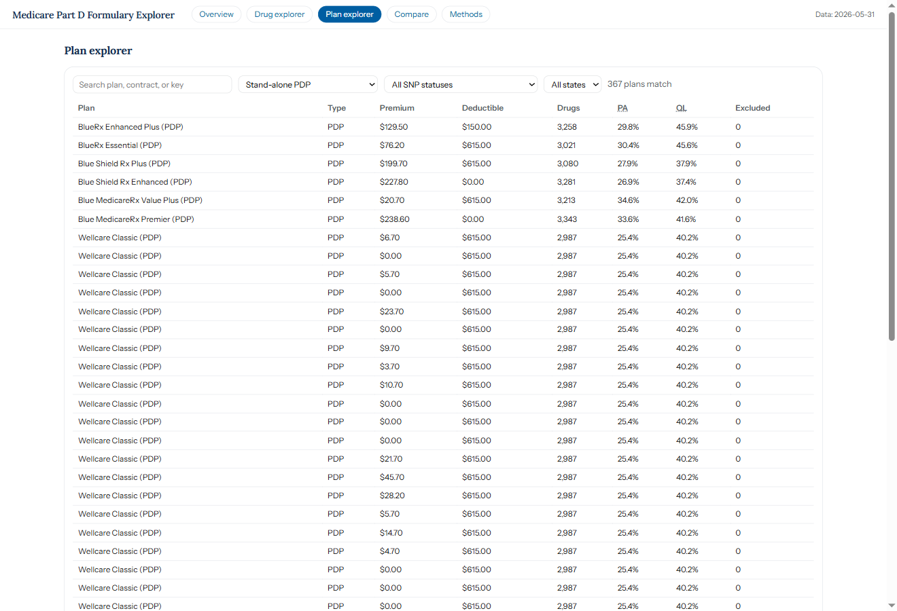

This document describes the MPDP Formulary Explorer, a static dashboard constructed from the CMS Monthly Prescription Drug Plan Formulary and Pharmacy Network Information file. Ophthalmic medications are used as worked examples throughout: glaucoma drops, dry-eye therapies, and ocular anti-inflammatory agents. Each section states the analytical question addressed by a given view, an ophthalmology example drawn from the underlying data, and the corresponding result.
Data source
The data source is the public formulary submission that each Medicare Part D plan files with CMS. A plan is defined by a unique contract, plan, and segment combination; each plan references one of a smaller set of formularies, the drug lists that define coverage. A single formulary is shared across many plans, such that 328 formularies serve all 5,518 plans, a mean of approximately 17 plans per formulary.
For each drug on a formulary, the file records a cost-sharing tier and
three utilization-management indicators: prior authorization (PA), step
therapy (ST), and quantity limit (QL). Companion
files provide tier cost sharing, excluded drugs, insulin cost sharing, and county service areas. The
dashboard integrates these files into drug-level and plan-level views. The examples presented here
are self-administered ophthalmic medications, which are adjudicated under the Part D pharmacy
benefit.
Aggregate statistics
The Overview screen summarizes the entire market prior to the selection of any individual drug, reporting aggregate counts, the distribution of listings across tiers, and the frequency with which each restriction is applied. Across all formulary listings, quantity limits are the most frequently applied restriction (38.8% of listings), prior authorization applies to 28.3%, and step therapy is uncommon (1.1%). These market-level rates provide a reference against which the restriction profile of an individual drug, examined in subsequent sections, can be interpreted.
Overview screen

Drug explorer
The Drug explorer lists each drug with its market-wide coverage and restriction
rates and supports free-text search, brand or generic filtering, and column sorting. A search for
ophthalmic returns 135 distinct drugs. The coverage column reflects a
consistent pattern in Part D ophthalmology: generic ophthalmic solutions are listed on nearly all
formularies, whereas their branded equivalents are not. Generic latanoprost is listed on 100% of
formularies, whereas branded latanoprostene bunod (Vyzulta) is listed on 54.6%.
Drug explorer, filtered to ophthalmic drugs

Drug detail
Selection of a drug opens its detail view, which reports its tier placement, the geographic variation in its coverage, and the plans that restrict or exclude it. Lifitegrast (Xiidra), a branded dry-eye therapy, is listed on 280 of the 328 formularies. It is assigned to tier 3 (non-preferred brand) on the majority of them and carries a quantity limit on approximately three-quarters of those listings and prior authorization on approximately 15%. The county map is recolored when the displayed metric is changed between coverage at any level and coverage without restriction.
Drug detail: tier placement and county coverage

Formularies and organizations
The same view lists each formulary that includes the drug, together with its tier, restrictions, and the number of plans that reference it. CMS assigns each formulary an eight-digit identifier only, without a name; the dashboard therefore labels each formulary by the organization whose plans use it (a formulary shared across affiliated organizations is labeled by the first, with a count of the remainder). For lifitegrast, the listing formularies are sponsored by organizations including Sentara Health Plans, Elderserve Health, and Group Health Cooperative of Eau Claire, and a single formulary may serve as many as eight of an organization's plans.
Formularies listing the drug, labeled by organization

Restrictions
Restriction rates vary substantially across ophthalmic agents even when overall coverage is similar. Quantity limits are most prevalent among the newer branded products (ophthalmic solutions are dispensed in fixed volumes), step therapy is applied where a lower-cost alternative is available, and prior authorization is concentrated among the higher-cost dry-eye agents. The table reports, for a representative set, the proportion of listing formularies that apply each restriction.
Restriction rates among listing formularies
| Drug | Coverage | PA | ST | QL | |
|---|---|---|---|---|---|
| lifitegrast (Xiidra) | brand | 85.4% | 15.0% | 0% | 75.4% |
| netarsudil (Rhopressa) | brand | 90.5% | 0.7% | 12.8% | 48.8% |
| brinzolamide 10 MG/ML | generic | 67.4% | 0% | 27.6% | 1.8% |
| cyclosporine (Cequa) | brand | 3.0% | 20.0% | 0% | 30.0% |
| loteprednol 2 MG/ML | generic | 37.8% | 0.8% | 41.1% | 1.6% |
The patterns are distinct: lifitegrast (Xiidra) is widely covered but quantity-limited and frequently subject to prior authorization; brinzolamide and loteprednol carry step therapy on one-quarter to two-fifths of formularies; and cyclosporine (Cequa), which has low overall coverage, is subject to prior authorization where it is listed.
Generic and brand
Pairing each molecule's generic formulation with its brand formulation demonstrates the generic-first structure of Part D formularies. For a given product, the generic is listed on the majority of formularies while the brand is listed on few, as plans direct utilization toward the generic. The brand and generic filter, together with the side-by-side coverage values, makes this relationship directly observable.
Same molecule, generic versus brand coverage
| Molecule | Generic coverage | Brand coverage | Brand |
|---|---|---|---|
| dorzolamide / timolol | 100.0% | 0.3% | Cosopt |
| travoprost | 76.5% | 0.3% | Travatan |
| difluprednate | 68.3% | 0.6% | Durezol |
| brimonidine 1 MG/ML | 64.3% | 9.1% | Alphagan |
Where no generic formulation exists, the brand accounts for coverage on its own: branded netarsudil (Rhopressa) reaches 90.5% of formularies because no generic substitute is available. Both situations are evident from the same coverage column.
Plan explorer
The Plan explorer addresses the complementary question. The 5,518 plans may be filtered by type, special-needs status, and state, and an individual plan may be opened to display its premium, deductible, tier cost sharing by coverage phase, insulin cost sharing, excluded drugs, and a searchable copy of its formulary. A Compare view presents two to four plans in parallel. For an individual patient, a tier assignment obtained from the drug-level view corresponds here to a specific cost-sharing amount: within a single plan, a tier 1 generic ophthalmic solution and a tier 3 branded product carry substantially different copayments.
Plan explorer, filtered to stand-alone drug plans

Benefit scope
One category of ophthalmic therapy is absent by design. The intravitreal anti-VEGF agents used for neovascular age-related macular degeneration and diabetic macular edema, including aflibercept (Eylea), ranibizumab (Lucentis), and faricimab (Vabysmo), do not appear in this file. These agents are administered by a physician in the clinical setting and are consequently covered under the Medicare Part B medical benefit rather than the Part D pharmacy benefit that this formulary file describes.
The dashboard represents self-administered ophthalmic medications (glaucoma drops, dry-eye solutions, and ocular anti-inflammatory agents) and reports their coverage, tiers, and restrictions in full. It does not, and cannot from this source, characterize office-administered injectable agents. A search for aflibercept or ranibizumab returns no results, consistent with the adjudication of those agents under a different Medicare benefit.
A four-stage Python pipeline (ingest, transform, aggregate,
and export) reads the pipe-delimited CMS files, resolves drug names through RxNorm, maps
county codes to FIPS codes, and writes compact JSON. A JavaScript front end renders the five views
from that JSON without a server. The command uv run python -m mpdp_formulary.cli all
generates the data, and python -m http.server --directory dashboard serves the
dashboard.
Two limitations warrant emphasis. The file represents a single monthly snapshot and therefore describes coverage as of 2026-05-31, without support for longitudinal analysis. Coverage and restrictions are reported at the RxNorm drug level, and the county map maps Social Security county codes to 2010 census boundaries, such that a small number of reorganized counties are displayed as missing data. The methods are documented in the project README.